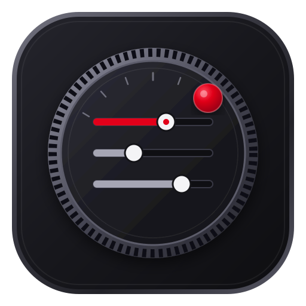

Camera Profile Slots (7-Slot Array)
Select which profile slot inside this .lcs file to view and adjust
Profile 1
7/10

LEICA DIAL & DOT Camera Configuration & .LCS Profile ManagerChoose how Leica Dial & Dot looks, or automatically match your macOS system appearance.
Location where Leica Dial & Dot stores its persistent configuration library and opens Import/Export .lcs dialogs by default.
—
.lcs Settings File
Choose one of the recommended filename structures below or enter any custom filename.
When importing into your camera from an SD card, Leica cameras look for settings.lcs.